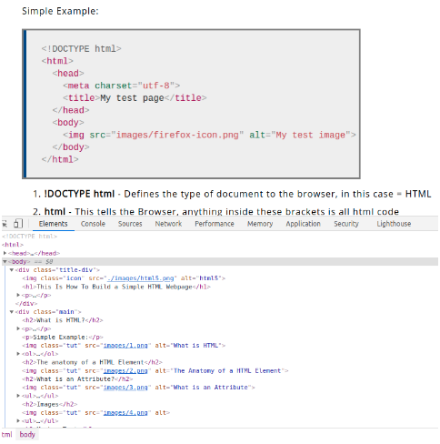
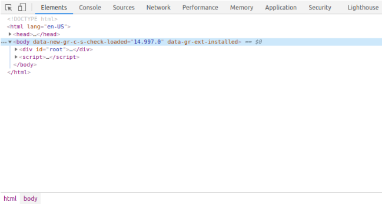
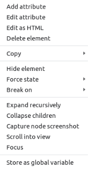
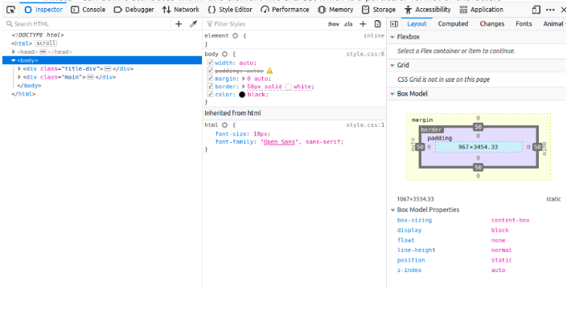

What are the Browser Dev Tools?
- They are a set of tools built into your Web Browser that allow you to Inspect and Manipulate code.
- You can open the Dev Tools with Ctrl + Shift + I
The DOM Explorer
The DOM Explorer Allows you to inspect & edit the HTML on the fly which is hand for live testing and debugging.
- You can hover over individual element and it will highlight the corresponding content on the Webpage and how the CSS styling is affecting it e.g. Padding and Margins
- Changing the source code within the browser does not save the changes to your html file.
If you Right-click on an element, you get the following options:
- Dekete Node - (sometimes Delete Element). Deletes the current element.
- Edit as HTML - (sometimes Add attribute/Edit text). Lets you change the HTML and see the results on the fly. Very useful for debugging and testing.
- :hover/:active/:focus - Forces element states to be toggled on, so you can see what their styling would look like.
- Coyp/Copy as HTML - Copy the currently selected HTML.
- Some browsers also have Copy CSS Path and Copy XPath available, to allow you to copy the CSS selector or XPath expression that would select the current HTML element.
The CSS Editor
As the name implies, the CSS Editor allows you to inspect & edit the HTML on the fly which is hand for live testing and debugging.
These features are especially handy:
- The rules applied to the current element are shown in order of most-to-least-specific.
- Click the checkboxes next to each declaration to see what would happen if you removed the declaration.
- Click the little arrow next to each shorthand property to show the property's longhand equivalents.
- Click a property name or value to bring up a text box, where you can key in a new value to get a live preview of a style change.
- Next to each rule is the file name and line number the rule is defined in. Clicking that rule causes the dev tools to jump to show it in its own view, where it can generally be edited and saved.
- You can also click the closing curly brace of any rule to bring up a text box on a new line, where you can write a completely new declaration for your page.
You'll notice a number of clickable tabs at the top of the CSS Viewer:
- Computed: This shows the computed styles for the currently selected element (the final, normalized values that the browser applies).
- Layout: In Firefox, this area includes two sections:
- Box Model: represents visually the current element's box model, so you can see at a glance what padding, border and margin is applied to it, and how big its content is.
- Grid: If the page you are inspecting uses CSS Grid, this section allows you to view the grid details.
- Fonts: In Firefox, the Fonts tab shows the fonts applied to the current element.
Author: Matthew Hinton